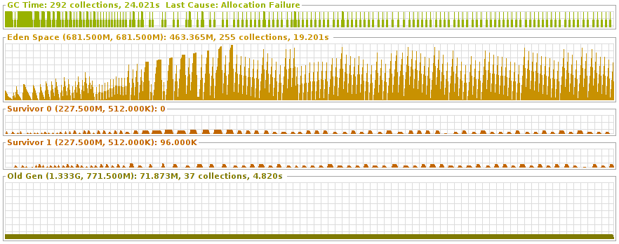

Robin Gower, Infonomics
Image Credit:Thomas RousingCC BY 2.0
person:Bob a thing:Person ;
:friendOf person:Alice ;
:bornOn "1990-07-04"^^xsd:date ;
:interestedIn picture:TheMonaLisa .
picture:TheMonaLisa :createdBy person:LeonardoDaVinci .
SELECT * WHERE {
?s ?p ?o .
}
SELECT * WHERE {
?s a thing:Person ;
rdfs:label "Alice" ;
.
}
(def the-guide (->uri "http://d-nb.info/gnd/4283976-2")
(def douglas-adams (->uri "http://d-nb.info/gnd/119033364")
(graph deutsche-national-bibliothek
[the-guide
[rdf:a gnd:Work]
[gndo:variantNameForTheWork "Per Anhalter durch die Galaxis"]
[gndo:preferredNameForTheWork "The hitchhiker's guide to the galaxy"]
[gndo:firstAuthor douglas-adams]]
[douglas-adams
[rdf:a gnd:DifferentiatedPerson]
[gndo:variantNameForThePerson "Adams, Douglas Noël"]
[foaf:page (->uri "http://de.wikipedia.org/wiki/Douglas_Adams")]
[gndo:dateOfBirth #inst "1952-03-11"]])
(read-input file)
(process-contents (read-input file) capitalise)
(write-result (process-contents (read-input file) capitalise) "output.txt")
(let [contents (read-input file)
results (process-contents contents)]
(write-result results "output.txt"))
(-> (read-input input)
(process-contents capitalise)
(write-result "output.txt"))
(->> (range 0 20) ;=> (0 1 2 3 4 ...)
(remove #{1 5}) ;=> (0 2 3 4 6 ...)
(filter even?) ;=> (0 2 4 6 8 ...)
(map inc) ;=> (1 3 5 7 9 ...)
(interpose "-") ;=> (1 "-" 3 "-" 5 ...)
(apply str)) ;=> "1-3-5-7-9-11-13-15-17-19"
(->> (slurp "http://loripsum.net/api/10/short/plaintext")
(#(clojure.string/split % #"\n"))
(remove empty?)
(map clojure.string/upper-case)
(apply str)
(spit "shouty-lorem.txt"))
(defn prepare [filename]
(-> filename
(read-dataset :format :csv)
(make-dataset move-first-row-to-header)
(rename-columns {"date" :date-string})
(derive-column :date-of-birth :date-string clj-time.format/parse)
(derive-column :age :date-of-birth #(-> % (interval (now)) in-years))))
Composition achieved by having each function take a dataset as the first argument and return a dataset.
Transformations can be parametised and arranged in a GUI.
(iterate inc 0) ;=> (0 1 2 ...)
(take 5 (iterate inc 0)) ;=> (0 1 2 3 4)
(drop 8 (iterate inc 0)) ;=> (8 9 10 ...)
(defn iterate [fn val]
(cons val (lazy-seq (iterate fn (fn val)))))
(let [coll (range 0 1e10)]
[(last coll) (first coll)]))
;=> OutOfMemoryError GC overhead limit exceeded java.lang.Long.valueOf (Long.java:840)
(let [coll (range 0 1e10)]
[(first coll) (last coll)]))
;=> [0 9999999999]

(defn pass-rows [dataset f]
(-> (make-dataset (->> dataset :rows f)
(column-names dataset))
(with-meta (meta dataset))))
(defn pass-rows [dataset f]
(let [original-meta (meta dataset)
original-columns (column-names dataset)]
(-> (make-dataset (->> dataset :rows f)
original-columns)
(with-meta original-meta))))
(defn domain-data (->url "http://statistics.gov.uk/data"))
(defn append-path-segments [url & segments]
(append-path-segments* url segments))
(def observation-uri
(partial append-path-segments domain-data))
(defn observation-uri [dataset time geo dimensions unit measure]
(append-path-segments domain-data dataset time geo dimensions unit measure))
(defn pipeline [big-input]
(lazy-cat
(-> big-input process-a)
(-> big-input process-b)))
(defn pipeline [get-big-input]
(lazy-cat
(-> (get-big-input) process-a)
(-> (get-big-input) process-b)))